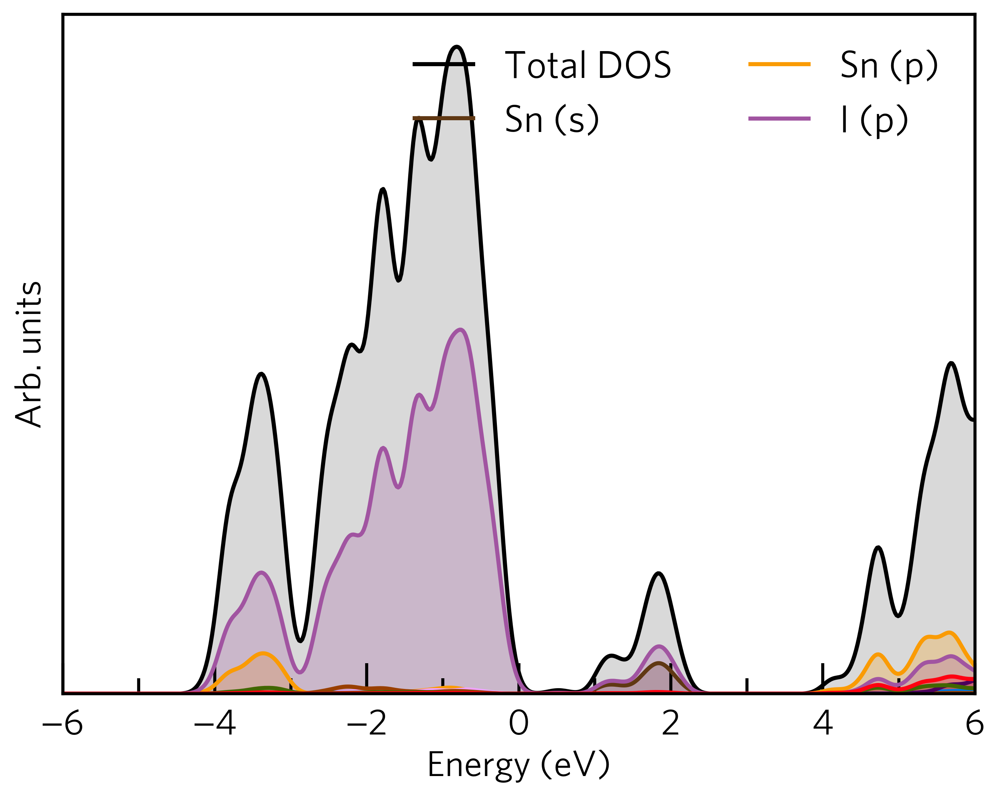
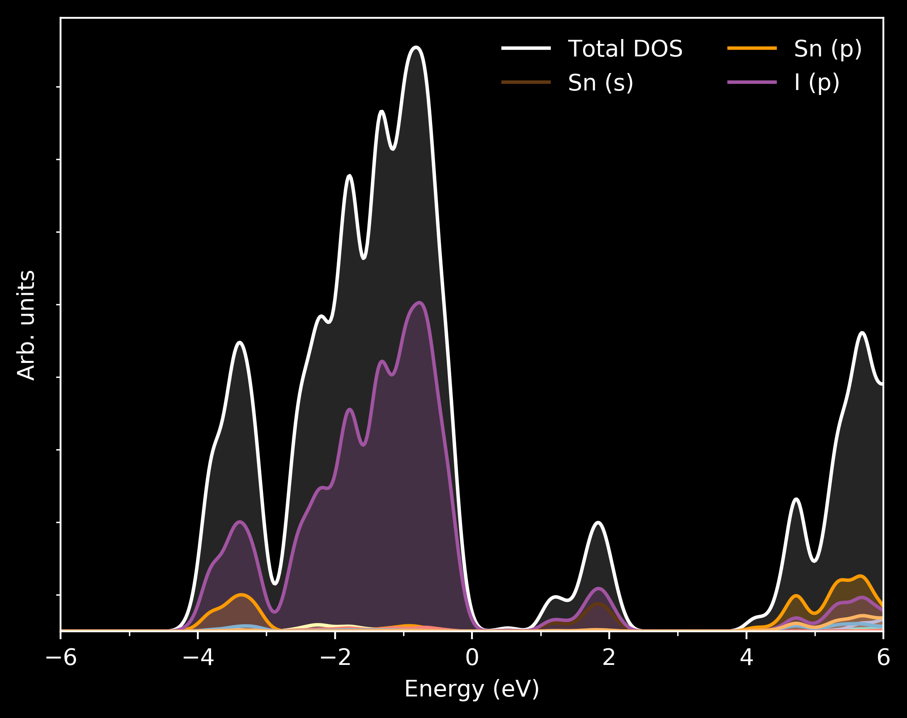

Customising Sumo Plots¶
Sumo’s default plotting style has been designed to look aesthetically pleasing, however, you may want to adjust the look and feel of plot for a publication. This is simple to achieve for both the command line scripts and python API. In this tutorial, we explore the ways in which sumo plots can customised.
Command-Line Interface¶
All sumo plotting scripts have a number of options that can be used to tweak the formatting
of a plot, including the --width, --height, --dpi, and --font, options.
Greater customisation is provided through the --style option, by use of
matplotlib style sheets.
For example: to add minor tick marks to the x-axis and set the font size to 18 points,
create a file called custom.mplstyle containing the following data:
xtick.minor.size : 7.5
font.size : 18
Now run the sumo plotting command and select the style option by specifying the path to the above file. For example:
sumo-dosplot --style custom.mplstyle
The plot should now reflect your customisations:
{kind=link}
In this way, one can create a customised plotting style that can be used for all sumo plots to maintain consistency. To see examples of what can be tuned, see the default sumo style sheet.
Using matplotlib in-built style sheets¶
Matplotlib provides a large number of in-built style sheets that can be used.
You can explore the matplotlib gallery to
see what is available.
These style sheets can be used in sumo by supplying the style name for the --style option.
To make the most of these styles, their use should be combined with the --no-base-style option, which prevents
the default sumo style from being applied.
For example, to make plots for use on a black background, the dark_background style can be employed using the
following command:
sumo-dosplot --style dark_background --no-base-style
The plot should now reflect these changes:
{kind=link}
Python API¶
Sumo plots produced using the python API support matplotlib style sheets for customisation through
the style optional argument. The process by which this is achieved is described on the
matplotlib website.
The style option can take one of the following:
A dictionary containing the style parameters. E.g.:
style = {'xtick.minor.size': 7.5, 'font.size': 18}
A path to a matplotlib style sheet file.
A matplotlib in-built style sheet name.
A list containing one or more of the above, in which case the styles will be composited on top of each other.
Similar to as discussed above, the no_base_style option should be set to True for best results
when using the in-built matplotlib styles.